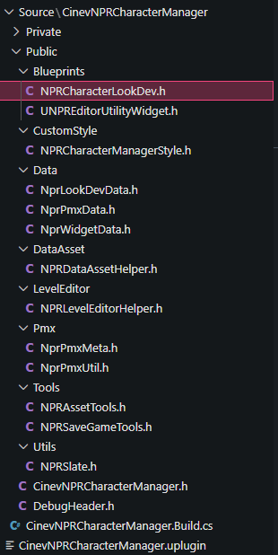
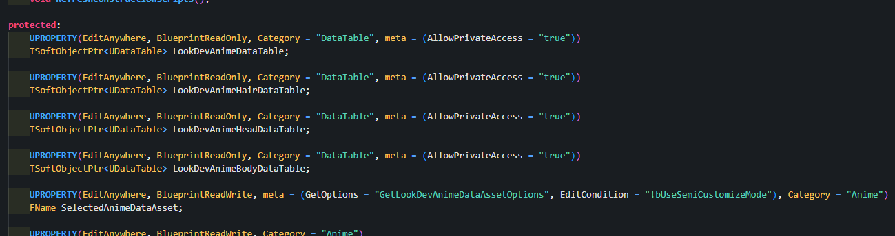
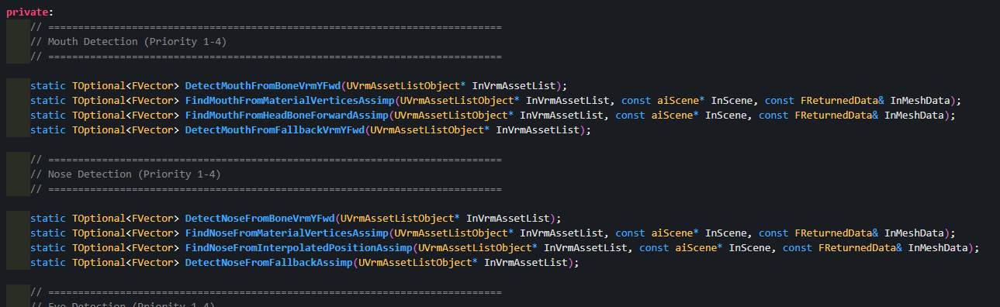
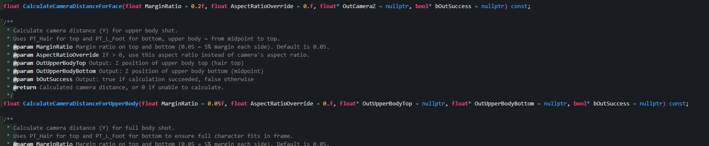
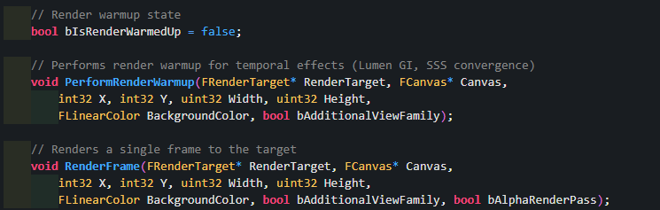

{kind=link}
Character System
An Unreal plugin for reusing character parts, textures, and materials, with registration and preview tools
Cinev Studio · UE5 · C++ · Blueprint · cinev.com
Tools for In-house Artists
Problem
Cinev Studio delivered an Unreal-based 3D editor through the web. Artists reported not knowing which Unreal settings to change when registering characters, and lacked a clear way to check that their assets appeared correctly. Early characters used a single texture without separate head, hair, and body parts, so color variations required repainting.
Part Reuse, Registration & Preview
I developed and maintained an Unreal C++ plugin that supports character-part separation and texture and material reuse. Separating head, hair, and body enabled color variations without repainting textures. I built tools for the art and planning teams to register and modify presets without code changes and preview the results in the Unreal editor.

NRC Data Asset — managing parts, materials, outline, and Chaos Cloth settings in one place

Editor preview — checking NPR characters on background without launching the game
A texture budget that accounts for close-ups
The baseline texture limit was 1024×1024. Characters initially followed the same rule, but close-ups and zooms exposed a loss of detail. I allowed 2048×2048 textures for faces and hair, making an exception where shot framing required it.
Changes and results
| Area | Before | After |
|---|---|---|
| Part and resource reuse | Repaint a single texture to change colors | Reuse textures and materials across parts; change colors without repainting |
| Save / Load | Authoring and runtime data combined in one Blueprint | Editor registration separated from Data Asset-based runtime loading |
| Preset authoring | Configuration managed in a complex character actor | Registration, edits, and look previews without code changes |
| External characters | Per-model camera reference setup | Facial reference points used for cameras and thumbnails |
System Structure
The same runtime character Blueprint handles presets authored by in-house artists and VRMs imported by external users. The authoring tools produce Data Assets, while external imports use the existing VRM loader and facial reference-point detection. Both input paths feed into the product’s character loading workflow.
[1] NPR Character Manager (C++ Plugin)
└─ BP_Character_EnvCheck ─── Editor (for in-house artists)
├─ Parts assembly (Head/Hair/Body)
├─ Preset save → Data Asset production
└─ Editor Tick → Preview without PIE
Data Asset ─────┐
▼
[2] BP_Basemodel_TF ─────────── Runtime (inherits CinevCharacter)
├─ Internal: Data Asset → Per-part async load
└─ External: VRM loader → Whole-model load
▲
│ VRM info node update
│
[3] VRM Reference Points ──── VRM4U Plugin (C++)
├─ 4-level fallback face detection (crown/eyes/mouth/nose)
└─ Camera target + automatic thumbnail capture
CinevNPRCharacterManager — C++ plugin headers
Editor — Character Environment Checker
This registration Blueprint is based on a C++ character actor. The art and planning teams assemble head, hair, and body parts and save presets as Data Assets. Editor Tick lets them preview characters and animations against a background without launching the game.
{kind=link}

C++ character actor header — DataTable reference declarations


Editor Tick — preview without PIE
Runtime — Character Blueprint
A separate codebase from the editor tool -- a runtime character Blueprint inheriting the base character class. Internal characters load parts asynchronously from editor-produced Data Assets (Head/Hair/Body split), while external VRM loads the entire model through a loader. The same Blueprint handles both, branching only at the load path.


Unified / split skeletal mesh load branching
External Model Support — VRM Reference Points
I wrote a C++ module for VRM4U that finds facial reference points through a four-level fallback. These points drive camera targets and face, upper-body, and full-body thumbnails. It also supports batch capture through a commandlet and A-pose/T-pose detection.
{kind=link}

C++ header — Mouth/Nose 4-level fallback detection
Auto face detection running on an external VRM

3-angle auto-captured thumbnails
{kind=link}

C++ — auto camera distance calculation for 3-angle thumbnails
{kind=link}

C++ — commandlet render frame capture (Lumen GI, SSS warmup)

In-house + external VRM character lineup